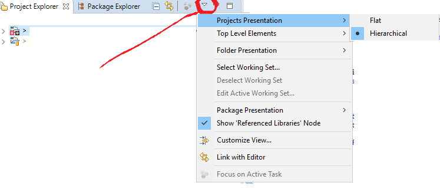

How to view hierarchical package structure in Eclipse package explorer
OK here's what I would like: in the Eclipse package explorer, I see the following: (dot represents a clickable arrow that I can use to expand the folder)
- PROJECT
- Source Folder
- Package Class
- Package.SubPackageFooBar
- Package.OtherSubPackage
- Package.OtherSubPackage.VerySubPackage
- OtherPackage Foobar
- OtherPackage.SubPackage Baz
Long story short, I want to have many packages, each with many subpackages, in a source folder (and several source folders, so making more won't solve the problem)--so on the order of a couple hundred packages per source folder--ten to twenty packages each with fifteen subpackages. Therefore, I want the hierarchy to look like this:
- PROJECT
- Source Folder
- Package Class
- Package.SubPackage Foo Bar
- Package.OtherSubPackage
- Package.OtherSubPackage.VerySubPackage
- OtherPackage Foobar
- OtherPackage.SubPackage Baz
so I can open or close a package and see a list of subpackages instead of having package and subpackage all at the same level in the hierarchy--which again makes far too many packages simultaneously displayed. Note this is not a question about filesystem; the file system works fine as far as I can tell-- it is only a question about the visual display in the Eclipse package explorer.
So: is there a way to add levels to the hierarchy? Thanks!! (Eclipse Helios on OS X 10.6)
Answer
Package Explorer / View Menu / Package Presentation... / Hierarchical
The "View Menu" can be opened with Ctrl + F10, or the small arrow-down
icon in the top-right corner of the Package Explorer.
Suggest
Here is representation of screen eclipse to make hierarachical.
